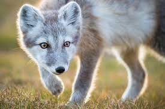

Zone géographique : l'ensemble de l'Arctique, à savoir au Groenland, en Russie, au Canada, en Alaska, au
Svalbard, en Islande et dans les Alpes scandinaves
lieu de vie : Toundra, zones côtières et banquise du cercle polaire dans le grand Nord.
alimentation : Carnivore
Longévité : 15 ans
Famille: canin
Taille : 46-68 cm
mode de vie : nocturne
comportement : Il se nourrit essentiellement de petits animaux qu'il repère grâce à son ouïe fine comme les
lemmings ou les lièvres polaires, les oiseaux et leurs œufs. Il s'approvisionne aussi sur les carcasses de
phoques et de rennes laissées par les ours blancs et les loups.